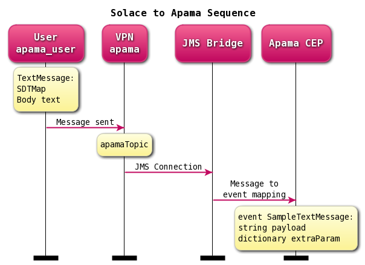

This document demonstrates how to integrate the Solace Java Message Service (JMS) with Apama Streaming Analytics for consumption of JMS messages. The goal of this document is to outline best practices for this integration to enable efficient use of both Apama Streaming Analytics and Solace JMS.

Apama CEP has been used in many real-time applications, i.e. HFT, trade surveillance, auto hedging, real-time betting, real-time analytics, real-time firewall and etc. Apama CEP has its place in streaming space with little footprint. Flink and Spark are all implemented in Java and Scala with inherited JVM disadvantages. How can Apama's EPL run faster than both C and Java®?
Solace has been the OPEN messaging leader in the industry, and is widely adopted by many financial firms and vertical industries. Solace's ultra wide bandwidth and low latency event broker works well with Apama hand-in-hand.
The target audience of this document is developers with knowledge of both Apama and JMS in general. As such this document focuses on the technical steps required to achieve the integration. For detailed background on either Solace JMS or Apama refer to the referenced documents below.
This document is divided into the following sections to cover the Solace JMS integration with Apama Streaming Analytics:
- Integrating with Apama Streaming Analytics
- Working with Solace High Availability
- Debugging Tips
Related Documentation
These links contain information related to this guide:
This tutorial requires access to Solace PubSub+ event broker and requires that you know several connectivity properties about your event broker. Specifically you need to know the following:
Resource | Value | Description |
Host | String | This is the address clients use when connecting to the event broker to send and receive messages. (Format: |
Message VPN | String | The event broker Message VPN that this client should connect to. |
Client Username | String | The client username. (See Notes below) |
Client Password | String | The client password. (See Notes below) |
There are several ways you can get access to Solace messaging and find these required properties.
Option 1: Use Solace Cloud
- Follow these instructions to quickly spin up a cloud-based Solace messaging service for your applications.
- The messaging connectivity information is found in the service details in the connectivity tab (shown below). You will need:
- Host:Port (use the JMS URI)
- Message VPN
- Client Username
- Client Password

Option 2: Start a Solace PubSub+ Software Event Broker
- Follow these instructions to start the software event broker in leading Clouds, Container Platforms or Hypervisors. The tutorials outline where to download and how to install the Solace software event broker.
- The messaging connectivity information are the following:
- Host: <public_ip> (IP address assigned to the software event broker in tutorial instructions)
- Message VPN: default
- Client Username: sampleUser (can be any value)
- Client Password: samplePassword (can be any value)
Option 3: Get access to a Solace PubSub+ appliance
- Contact your Solace PubSub+ appliance administrators and obtain the following:
- A Solace Message-VPN where you can produce and consume direct and persistent messages
- The host name or IP address of the appliance hosting your Message-VPN
- A username and password to access the appliance
This is a discussion of an approach for consuming messages from a Java Messaging Service (JMS) bus in Apama CEP Correlator. The full code is freely available on Github as part of this project in src/apama-solace-sample.
The general Apama Streaming Analytics support for connectors is documented in the Apama Streaming Analytics Documentation. The configuration outlined in this document makes use of correlator-integrated messaging for JMS to achieve the desired integration with Solace via JMS.
This integration guide demonstrates how to configure a Apama Streaming Analytics application to receive JMS messages using a set of custom message-to-event configurations. Accomplishing this requires completion of the following steps.
- Step 1 - Obtain access to Solace event broker and JMS API, see the Solace Developer Portal
- Step 2 - Configuration of the Solace Event Broker.
- Step 3 - Obtain Apama Streaming Analytics, see the Apama Community Edition Downloads
- Step 4 – Coding Solace message producer
- Step 5 – Coding Apama Event Processing Language AKA MonitorScript
- Step 6 - Configuring Apama correlator-integrated adapter for JMS
- Step 7 - Starting up Apama correlator with correlator-integrated adapter for JMS
Description of Resources Required
This integration guide will demonstrate creation of Solace JMS custom receiver and configuring the receiver to receive messages. This section outlines the resources that are required/created and used in the subsequent sections.
Solace Resources
The following Solace Event Broker resources are required.
Resource | Value | Description |
Solace Event Broker Host | Refer to section 2- Get Solace Messaging for values | |
Message VPN | ||
Client Username | ||
Client Password | ||
Solace Queue | apama | Solace destination of persistent messages consumed |
JNDI Connection Factory | jms/cf/apama | The JNDI Connection factory for controlling Solace JMS connection properties |
Step 1 – Obtain access to Solace JMS API
The Solace JMS jars are required. They can be obtained on Solace Developer Portal Downloads or from Maven Central.
Maven Dependencies
The easiest way to integrate Solace and Apama is using the client libraries available via public Maven Repositories, for example:
<dependencies>
<dependency>
<groupId>com.solacesystems</groupId>
<artifactId>sol-jms</artifactId>
<version>10.0.0</version>
</dependency>
</dependencies>
Or if you downloaded the libraries and are referencing them directly, the following resources are all required:
Resource | Value | Description |
Solace Common | sol-common-VERSION.jar | Solace common utilities library. |
Solace JCSMP | sol-jcsmp-VERSION.jar | Underlying Solace wireline support libraries. |
Solace JMS | sol-jms-VERSION.jar | Solace JMS 1.1 compliant libraries. |
Step 2 – Configuring the Solace Event Broker
The Solace Event Broker needs to be configured with the following configuration objects at a minimum to enable JMS to send and receive messages within the Apama application.
- A Message VPN, or virtual event broker, to scope the integration on the Solace Event Broker.
- Client connectivity configurations like usernames and profiles
- Guaranteed messaging endpoints for receiving messages.
- Appropriate JNDI mappings enabling JMS clients to connect to the Solace Event Broker configuration.
The recommended approach for configuring a event broker is using Solace PubSub+ Manager, Solace's browser-based administration console packaged with the Solace PubSub+ event broker. This document uses CLI as the reference to remain concise - look for related settings if using Solace PubSub+ Manager.
For more details related to event broker CLI see Solace-CLI. Wherever possible, default values will be used to minimize the required configuration. The CLI commands listed also assume that the CLI user has a Global Access Level set to Admin. For details on CLI access levels please see User Authentication and Authorization.
Creating a Message VPN
If you are using Solace Cloud you can skip this step because a message-VPN is already assigned. For the name, refer to the "Message VPN" in the connection details page.
This section outlines how to create a message-VPN called "apama" on the event broker with authentication disabled and 2GB of message spool quota for Guaranteed Messaging. This message-VPN name is required in the configuration when connecting to the messaging event broker. In practice, appropriate values for authentication, message spool and other message-VPN properties should be chosen depending on the end application's use case.
> home
> enable
# configure
(config)# create message-vpn apama
(config-msg-vpn)# authentication
(config-msg-vpn-auth)# user-class client
(config-msg-vpn-auth-user-class)# basic auth-type none
(config-msg-vpn-auth-user-class)# exit
(config-msg-vpn-auth)# exit
(config-msg-vpn)# no shutdown
(config-msg-vpn)# exit
(config)#
(config)# message-spool message-vpn apama
(config-message-spool)# max-spool-usage 2000
(config-message-spool)# exit
(config)#
Configuring Client Usernames & Profiles
This section outlines how to update the default client-profile and how to create a client username for connecting to the Solace Event Broker. For the client-profile, it is important to enable guaranteed messaging for JMS messaging and transacted sessions if using transactions.
The chosen client username of "apama_user" will be required by the Apama when connecting to the Solace Event Broker.
(config)# client-profile default message-vpn apama
(config-client-profile)# message-spool allow-guaranteed-message-receive
(config-client-profile)# message-spool allow-guaranteed-message-send
(config-client-profile)# message-spool allow-transacted-sessions
(config-client-profile)# exit
(config)#
(config)# create client-username apama_user message-vpn apama
(config-client-username)# acl-profile default
(config-client-username)# client-profile default
(config-client-username)# no shutdown
(config-client-username)# exit
(config)#
Setting up Guaranteed Messaging Endpoints
This integration guide shows receiving messages within the Apama from a single JMS Queue. For illustration purposes, this queue is chosen to be an exclusive queue with a message spool quota of 2GB matching quota associated with the message VPN. The queue name chosen is "apama".
(config)# message-spool message-vpn apama
(config-message-spool)# create queue apama
(config-message-spool-queue)# access-type exclusive
(config-message-spool-queue)# max-spool-usage 2000
(config-message-spool-queue)# permission all delete
(config-message-spool-queue)# no shutdown
(config-message-spool-queue)# exit
(config-message-spool)# exit
(config)#
Setting up Solace JNDI References
To enable the JMS clients to connect and look up the Queue destination required by Apama, there are two JNDI objects required on the Solace Event Broker:
- A connection factory: jms/cf/apama
- A queue destination: JNDI/Q/apama
They are configured as follows:
(config)# jndi message-vpn apama
(config-jndi)# create connection-factory jms/cf/apama
(config-jndi-connection-factory)# property-list messaging-properties
(config-jndi-connection-factory-pl)# property default-delivery-mode persistent
(config-jndi-connection-factory-pl)# exit
(config-jndi-connection-factory)# property-list transport-properties
(config-jndi-connection-factory-pl)# property direct-transport false
(config-jndi-connection-factory-pl)# property "reconnect-retry-wait" "3000"
(config-jndi-connection-factory-pl)# property "reconnect-retries" "20"
(config-jndi-connection-factory-pl)# property "connect-retries-per-host" "5"
(config-jndi-connection-factory-pl)# property "connect-retries" "1"
(config-jndi-connection-factory-pl)# exit
(config-jndi-connection-factory)# exit
(config-jndi)#
(config-jndi)# no shutdown
(config-jndi)# exit
(config)#
Step 3 – Obtain Apama Streaming Analytics
The Apama Streaming Analytics can be obtained one of 2 ways.
- If you are in an organization that is an existing Apama customer, it is likely your organization already has Apama Streaming Analytics and corporate policies about their use. You will have to contact your application management team in regards to a Apama Streaming Analytics license.
- If you are new to Apama Streaming Analytics, you can obtain Apama Community Edition from the Apama Community Edition Downloads. For help getting started with your Apama Streaming Analytics Community Edition you can refer to Apama Community Edition Docs.
Step 4 – Coding Solace message producer
Solace JCSMP project
- Create a session independent TextMessage - In a Session independent message ownership model, client applications can reuse messages between send operations. Messages are allocated on demand and are disposed explicitly by client applications when they are done with the messages.
TextMessage msg = JCSMPFactory.onlyInstance().createMessage(TextMessage.class); - Create a Structured Data Map for message properties
SDTMap map = prod.createMap(); - Add Apama event name "com.solace.sample.SampleTextMessage" in MESSAGE_TYPE
map.putString("MESSAGE_TYPE", "com.solace.sample.SampleTextMessage"); - Add additional message properties, i.e. creation timestamp to track latency
map.putLong("MESSAGE_CREATED", System.currentTimeMillis()); - Add message property to message
msg.setProperties(map); - Send off the message to a topic destination
prod.send(msg, topic);
SDTMap map = prod.createMap();
map.putString("MESSAGE_TYPE", "com.solace.sample.SampleTextMessage");
TextMessage msg = JCSMPFactory.onlyInstance().createMessage(TextMessage.class);
for (int msgsSent = 0; msgsSent < 1000000; ++msgsSent) {
msg.reset();
msg.setText("msg count is " + String.format("%05d", msgsSent));
msg.setDeliveryMode(DeliveryMode.DIRECT);
msg.setApplicationMessageId("appID-" + msgsSent);
msg.setElidingEligible(true);
map.putLong("MESSAGE_CREATED", System.currentTimeMillis());
msg.setProperties(map);
prod.send(msg, topic);
Thread.sleep(500);
}
Step 5 – Coding Apama Event Processing Language AKA MonitorScript
From Apama Streaming Analytics Documentation, there are details on how to develop Apama applications.
Apama Event Definition A simple event with 2 fields, payload string field and extraParam dictionary field.
event SampleTextMessage {
string payload;
dictionary<string, string> extraParam;
}
Apama Event Processing Language source
monitor SampleTopicReceiver {
action getSolaceMessage() {
on AppStarted() {
JMS.onApplicationInitialized();
}
}
action onload () {
getSolaceMessage();
on JMSReceiverStatus() as receiverStatus
{
log "Received receiverStatus from JMS: " + receiverStatus.toString() at INFO;
on all SampleTextMessage() as sampleTextMessage {
log "From JMS: " + sampleTextMessage.toString() at INFO;
}
}
route AppStarted();
}
}
Step 6 – Configuring Apama correlator-integrated adapter for JMS
From Apama Streaming Analytics Documentation there are details on how to set up JMS connection bundle. JMS adapter can be configured either in the correlator-integrated adapter for JMS editor or by editing sections of the XML and .properties configuration files directly.
The Apama correlator-integrated messaging for JMS configuration consists of a set of XML files and .properties files.
A correlator that supports JMS has the following two files:
- jms-global-spring.xml
- jms-mapping-spring.xml
In addition, for each JMS connection added to the configuration, there will be an additional XML and .properties file :
- connectionId-spring.xml
- connectionId-spring.properties
The JMS property file has all the custom settings and values in each use case. In this project, static receiver is used to receive Solace messages from apamaTopic.
connectionFactory.jndiName.solace=jms/cf/apama
jndiContext.environment.solace=java.naming.factory.initial\=com.solacesystems.jndi.SolJNDIInitialContextFactory\njava.naming.provider.url\=${jndiContext.environment.provider.url.solace}\n
jndiContext.environment.provider.url.solace=smf\://192.168.56.101
jndiContext.jndiAuthentication.username.solace=apama_user@apama
jndiContext.jndiAuthentication.password.solace=
connectionAuthentication.username.solace=
connectionAuthentication.password.solace=
clientId.solace=
staticReceiverList.solace=topic\:apamaTopic;
defaultReceiverReliability.solace=BEST_EFFORT
defaultSenderReliability.solace=BEST_EFFORT
JMSProviderInstallDir.solace=C\:/tools/SoftwareAG/common/lib
classpath.solace=libs/sol-common-10.0.1.jar;libs/sol-jcsmp-10.0.1.jar;libs/sol-jms-10.0.1.jar;
The message to event mapping is done in adapter editor. Manual changes to the mapping XML should be avoided.
- JMS body is mapped to payload field
- JMS property is mapped to extraParam field
<mapping:mapOutput>
<mapping:property name="eventType" value="com.solace.sample.SampleTextMessage"/>
<mapping:rule>
<mapping:source><![CDATA[${jms.body.textmessage}]]></mapping:source>
<mapping:target><![CDATA[${apamaEvent['payload']}]]></mapping:target>
<mapping:action><![CDATA[None]]></mapping:action>
<mapping:type><![CDATA[BINDING_PARAM]]></mapping:type>
</mapping:rule>
<mapping:rule>
<mapping:source><![CDATA[${jms.properties}]]></mapping:source>
<mapping:target><![CDATA[${apamaEvent['extraParam']}]]></mapping:target>
<mapping:action><![CDATA[None]]></mapping:action>
<mapping:type><![CDATA[BINDING_PARAM]]></mapping:type>
</mapping:rule>
</mapping:mapOutput>
Step 7 – Starting up Apama correlator with correlator-integrated adapter for JMS
Starting up Apama correlator in development is done from Apama Workbench. For server deployment, please see From Deploying and Managing Apama Applications.
The Solace JMS API Online Reference Documentation section "Establishing Connection and Creating Sessions" provides details on how to enable the Solace JMS connection to automatically reconnect to the standby event broker in the case of a HA failover of a Solace Event Broker. By default Solace JMS connections will reconnect to the standby event broker in the case of an HA failover.
In general the Solace documentation contains the following note regarding reconnection:
Note: When using HA redundant event brokers, a fail-over from one event broker to its mate will typically
occur in under 30 seconds, however, applications should attempt to reconnect for at least five minutes.
In the previous section "Setting up Solace JNDI References", the Solace CLI commands correctly configured the required JNDI properties to reasonable values. These commands are repeated here for completeness.
(config)# jndi message-vpn apama
(config-jndi)# connection-factory jms/cf/apama
(config-jndi-connection-factory)# property-list transport-properties
(config-jndi-connection-factory-pl)# property "reconnect-retry-wait" "3000"
(config-jndi-connection-factory-pl)# property "reconnect-retries" "20"
(config-jndi-connection-factory-pl)# property "connect-retries-per-host" "5"
(config-jndi-connection-factory-pl)# property "connect-retries" "1"
(config-jndi-connection-factory-pl)# exit
(config-jndi-connection-factory)# exit
(config-jndi)# exit
(config)#
The key component for debugging integration issues with the Solace JMS API is the API logging that can be enabled. How to enable logging in the Solace API and Apama is described below.
How to enable Solace JMS API logging
Solace JMS API makes use of the Jakarta Commons Logging API (JCL), configuring the Solace JMS API logging is very similar to configuring any other Apama. The following example shows how to enable debug logging in the Solace JMS API using log4j.
One note to consider is that since the Solace JMS API has a dependency on the Solace Java API (JCSMP) both of the following logging components should be enabled and tuned when debugging to get full information. For example to set both to debug level:
log4j.category.com.solacesystems.jms=DEBUG
log4j.category.com.solacesystems.jcsmp=DEBUG
By default info logs will be written to the console. This section will focus on using log4j as the logging library and tuning Solace JMS API logs using the log4j properties. Therefore in order to enable Solace JMS API logging, a user must do two things:
- Put Log4j on the classpath.
- Create a log4j.properties configuration file in the root folder of the classpath
Below is an example Log4j properties file that will enable debug logging within the Solace JMS API.
log4j.rootCategory=INFO, stdout
log4j.appender.stdout=org.apache.log4j.ConsoleAppender
log4j.appender.stdout.layout=org.apache.log4j.PatternLayout
log4j.appender.stdout.layout.ConversionPattern=%d{ABSOLUTE} %5p %t %c{2}:%L - %m%n
log4j.category.com.solacesystems.jms=DEBUG
log4j.category.com.solacesystems.jcsmp=DEBUG
This project has a built-in topic consumer to dump received messages from "apamaTopic" - hence Solace console shows received messages from the event broker.
Received message:
Destination: Topic 'apamaTopic'
AppMessageID: appID-8224
Priority: 0
Class Of Service: USER_COS_1
DeliveryMode: DIRECT
Message Id: 8230
Eliding Eligible
User Property Map: 2 entries
Key 'MESSAGE_CREATED' (Long): 1488757225657
Key 'MESSAGE_TYPE' (String): com.solace.sample.SampleTextMessage
Binary Attachment: len=21
1c 15 6d 73 67 20 63 6f 75 6e 74 20 69 73 20 30 ..msg.count.is.0
38 32 32 34 00 8224.
msg count is 08224
How to enable Apama logging
Some of the JMS sender/receiver properties can be toggled during development to debug application and exam JMS messages and performance matrix
<bean id="globalReceiverSettings" class="com.apama.correlator.jms.config.JmsReceiverSettings">
<property name="receiverFlowControl" value="false"/>
<!-- These logging options are for testing/diagnostics only and should
not be enabled in a production system due to the possible
performance impact
-->
<property name="logJmsMessages" value="false"/>
<property name="logJmsMessageBodies" value="true"/>
<property name="logProductMessages" value="false"/>
<property name="logPerformanceBreakdown" value="true"/>
<property name="logDetailedStatus" value="false"/>
</bean>
Log output shows JMS performance breakdown details, correlator status, JMS status and received JMS message
2017-03-05 14:20:30.738 INFO [23732:JMSReceiver:solace-receiver-apamaTopic] - 40% RECEIVING: min,mean,max secs per message = 0.193150, 0.199414, 0.206460
2017-03-05 14:20:30.738 INFO [23732:JMSReceiver:solace-receiver-apamaTopic] - 0% MAPPING: min,mean,max secs per message = 0.000385, 0.000874, 0.001937
2017-03-05 14:20:30.738 INFO [23732:JMSReceiver:solace-receiver-apamaTopic] - 0% ENQUEUING: min,mean,max secs per batch = 0.000118, 0.000296, 0.000484
2017-03-05 14:20:30.738 INFO [23732:JMSReceiver:solace-receiver-apamaTopic] - 0% JMS_ACK: min,mean,max secs per batch = 0.000000, 0.000002, 0.000003
2017-03-05 14:20:30.738 INFO [23732:JMSReceiver:solace-receiver-apamaTopic] - 60% R_TIMEOUTS: min,mean,max secs per batch = 0.299299, 0.300074, 0.300875
2017-03-05 14:20:30.738 INFO [23732:JMSReceiver:solace-receiver-apamaTopic] - 100% TOTAL: min,mean,max secs per batch = 0.494446, 0.500696, 0.507113
...
2017-03-05 15:56:24.481 INFO [19636] - Correlator Status: sm=3 nctx=1 ls=11 rq=0 eq=0 iq=0 oq=0 icq=0 lcn="<none>" lcq=0 lct=0.0 rx=6187 tx=0 rt=1 nc=1 vm=494716 pm=23020 runq=0 si=9.0 so=0.0 srn="<none>" srq=0 (no license file)
2017-03-05 15:56:24.484 INFO [19636:Status] - JMS Status: s=1 tx=0 sRate=0 sOutst=0 r=1 rx=6,182 rRate=0 rWindow=0 rRedel=0 rMaxDeliverySecs=0.0 rDupsDet=0 rDupIds=0 connErr=0 jvmMB=63
...
2017-03-05 18:17:36.091 INFO [27192:JMSReceiver:solace-receiver-apamaTopic] - 'solace-receiver-apamaTopic' has received JMS message: Property.JMS_Solace_DeadMsgQueueEligible=false
Property.JMS_Solace_DeliverToOne=false
Property.JMS_Solace_ElidingEligible=false
Property.JMS_Solace_isXML=false
Property.MESSAGE_CREATED=1488755856084
Property.MESSAGE_TYPE=com.solace.sample.SampleTextMessage
Property.Solace_JMS_Prop_IS_Reply_Message=false
JMSDestination=Topic<apamaTopic>
JMSMessageID=appID-5488
JMSRedelivered=false
JMSTimestamp=0
JMSTimestamp.toString=0
JMSTimestamp.approxAgeInMillis=N/A
JMSExpiration=0
JMSExpiration.toString=0
JMSReplyTo=<NullDestination>
JMSCorrelationID=null
JMSDeliveryMode=NON_PERSISTENT
JMSPriority=0
MessageClass=TextMessage
Body="msg count is 05488"
2017-03-05 18:17:36.092 INFO [33608] - com.solace.sample.SampleTopicReceiver [3] From JMS: com.solace.sample.SampleTextMessage("msg count is 05488",{"JMS_Solace_DeadMsgQueueEligible":"false","JMS_Solace_DeliverToOne":"false","JMS_Solace_ElidingEligible":"false","JMS_Solace_isXML":"false","MESSAGE_CREATED":"1488755856084","MESSAGE_TYPE":"com.solace.sample.SampleTextMessage","Solace_JMS_Prop_IS_Reply_Message":"false"})
A working sample with maven pom build is provided in GitHub with this guide: